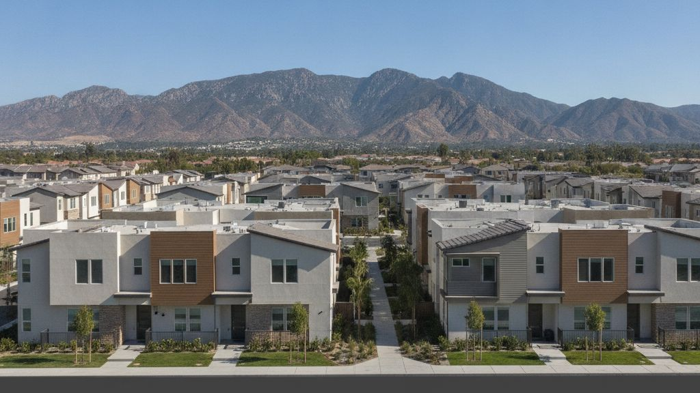
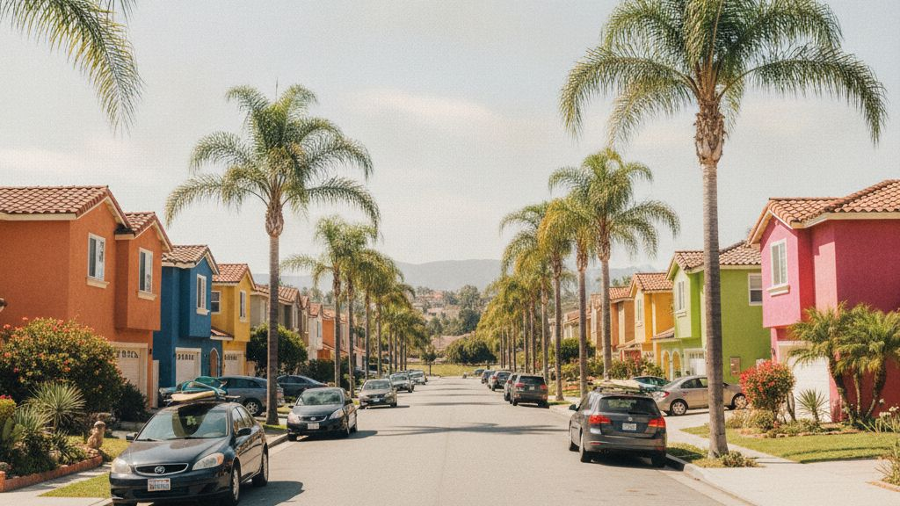

Encanto92114, 92113Encanto is an established southeastern San Diego community that follows Euclid Avenue and Imperial Avenue and rises toward Skyline.Paradise Hills92139Paradise Hills occupies a ridge-and-mesa area in the south of the City of San Diego, between Interstate 805 and the Sweetwater corridor.Skyline92114, 92139Skyline sits on the high ground of southeastern San Diego, with long sightlines toward downtown, the bay and Mexico on clear days.Otay Mesa92154, 92173Otay Mesa lies along the international border east of I-805 and includes a mix of long-standing residential tracts and newer subdivisions in the southern part of the City of San Diego.San Ysidro92173, 92154San Ysidro is the southernmost community in the City of San Diego, centered on the busiest land border crossing in the Western Hemisphere.Nestor92154Nestor is a small, long-settled neighborhood in the south bay area between Imperial Beach and Otay Mesa, bordering the Tijuana River Valley.
Have a property that needs a value?
Send the address and the reason for the appraisal. You will get a firm quote and a schedule before anything is booked.